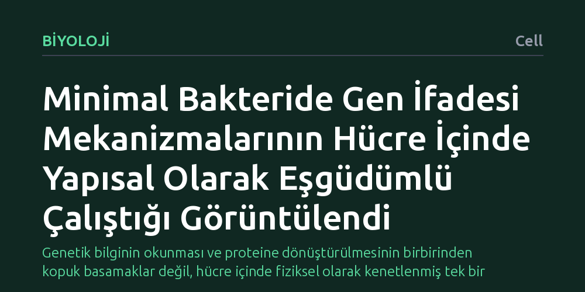

BIYOLOJI · Cell · 2026-10-12
Araştırmacılar, minimal bir bakteride gen ifadesini yürüten moleküler makinelerin hücre içindeki yerleşimini ve birbirleriyle etkileşimlerini inceledi. Kriyoelektron tomografisiyle yapılan ölçümlerde, genetik bilginin kopyalanması, protein üretimi ve hücre zarına bağlanma süreçlerinin doğrudan yapısal eşgüdüm içinde çalıştığı gösterildi.
Genetik bilginin okunması ve proteine dönüştürülmesinin birbirinden kopuk basamaklar değil, hücre içinde fiziksel olarak kenetlenmiş tek bir eşgüdümlü üretim hattı gibi işlediğini gösteriyor.

Genetik bilginin işlenmesi ve proteine dönüştürülmesi ders kitaplarında genellikle birbirinden bağımsız basamaklar halinde anlatılır. Önce hücre çekirdeğinde ya da sitoplazmada DNA'dan bir RNA kopyası çıkarılır; ardından bu kopya ribozomlara taşınır ve protein sentezi başlar. Ancak canlı bir hücrenin içi boş bir laboratuvar tüpü değil, moleküllerle tıka basa dolu, son derece yoğun bir ortamdır. Bilim insanları uzun süredir bu moleküler makinelerin hücre içinde rastgele mi yüzdüğünü, yoksa düzenli bir hat üzerinde birlikte mi iş gördüğünü merak ediyordu.
Bu sorunun yanıtı, yaşamın en temel işleyiş kurallarını anlamak açısından büyük önem taşır. Hücrelerin kısıtlı bir hacimde, gereksiz enerji harcamadan ve hata yapmadan çalışabilmesi, bu süreçlerin sıkı bir fiziksel organizasyona sahip olduğunu düşündürüyordu. Ancak moleküler makineleri hücreyi parçalamadan, canlıya en yakın halleriyle bir arada görüntülemek uzun yıllar boyunca aşılamayan teknik bir zorluk olarak kaldı.
Geleneksel biyokimya yaklaşımlarında hücreler parçalanır ve içlerindeki proteinler saflaştırılarak incelenir. Bu yöntem moleküllerin kimyasal yapısını anlamada çok başarılı olsa da hücre içindeki orijinal yerleşimlerini ve birbirleriyle olan komşuluk ilişkilerini tamamen siler. Araştırmacılar bu sınırlamayı aşmak amacıyla, biyolojik yapıları doğal hallerinde dondurarak incelemeyi sağlayan kriyoelektron tomografisi tekniğine başvurdu.
Çalışmada model olarak genetik içeriği ve karmaşıklığı en temel düzeye indirgenmiş minimal bir bakteri türü seçildi. Tek tek hücreler kimyasal sabitleyiciler kullanılmadan hızla donduruldu ve elektron mikroskobuyla farklı açılardan taranarak üç boyutlu hücresel haritaları çıkarıldı. Böylece hücre içindeki protein sentez makineleri, doğal ortamlarında tek bir hücre düzeyinde doğrudan gözlemlenebilir hale geldi.
Elde edilen üç boyutlu görüntüler, gen ifadesinde görev alan moleküler yapıların hücre içine rastgele dağılmadığını açıkça ortaya koydu. Araştırmacılar, genetik kodu okuyan ve RNA üreten enzimler ile bu RNA'yı proteine çeviren ribozomların birbirine fiziksel olarak çok yakın konumlarda kümelendiğini belirledi. Dahası, üretilen proteinlerin hücre zarına yerleştirilmesini sağlayan mekanizmaların da bu zincire doğrudan bağlandığı saptandı.
Çalışma, yazarların ifadesiyle 'bakteriyel çevirinin neredeyse eksiksiz bir görünümünü niceliksel olarak çözümlüyor.' DNA'nın okunması, proteinin sentezlenmesi ve hücre zarına yönlendirilmesi süreçleri bağımsız adımlar olarak değil, birbirine mekanik olarak kenetlenmiş tek bir üretim zinciri gibi eşgüdüm içinde gerçekleşiyor.
Elde edilen sonuçlar, yaşamın en yalın hücrelerinde bile gen ifadesinin mekânsal bir mimariye dayandığını gösteriyor. Süreçlerin bir arada yürümesi, hücresel haberci moleküllerin sitoplazmada kaybolmadan ya da bozulmadan anında işlenmesini sağlayarak hücreye hız ve verimlilik kazandırıyor. Bu durum, gen ifadesinin sadece biyokimyasal bir reaksiyonlar dizisi değil, aynı zamanda titizlikle düzenlenmiş fiziksel bir montaj hattı olduğunu kanıtlıyor.
Yine de çalışmanın kapsamını değerlendirirken bazı sınırları göz önünde bulundurmak gerekir. İnceleme yalnızca genetik yapısı sadeleştirilmiş minimal bir bakteri modelinde gerçekleştirildiği için, karmaşık hücre mimarisine sahip çok hücreli canlılara ya da geniş genomlu bakterilere doğrudan uyarlanamaz. Ayrıca dondurulmuş anlık kareler üzerinden yapılan bu yapısal analizler, süreçlerin zamana bağlı dinamik akışını tüm yönleriyle yansıtmakta sınırlı kalmaktadır.